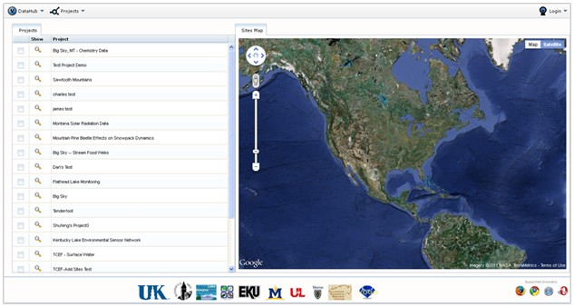
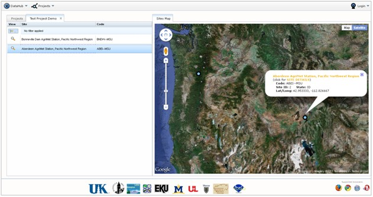
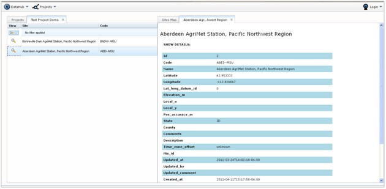

This section will show you how to browse among multiple projects stored in VOEIS, simultaneously. The VOEIS Data Hub provides functionality for side-by-side investigation of sites from different projects, and comparison of the data types and variables associated with those sites.
The Project_Browse page (shown below) lists all of the projects stored within VOEIS. The list can be sorted alphabetically by clicking the header box at the top labeled “Project”.

Clicking on a project name will locate all of the sites contained within that project in the map on the right side of the page. A new (Project_Name) tab will appear on the left, containing all of the site names/codes associated with the project. The list can be sorted by clicking on the header boxes labeled “Site” and “Code”.

Another option for sorting the site list is to apply custom filters. To do this, click the small button with the yellow arrow located in the upper left. This button calls the pop-out window below. Custom filtering rules are described using Boolean logic and applied to either a single column or multiple columns.
To see detailed information about a given site, either click on the site name in the site list, or click your mouse on a particular site location on the map. A callout will appear above the site displaying some site metadata. To see a more detailed metadata list, either click the magnifying glass icon next to the site name in the site list, or click “Site Details” in the callout. A new (Site_Name) tab will appear on the right side of the window. Selection of a second site will simply produce an additional (Site_Name) tab.
The site detail list includes location information and a list of variables that are associated with this site in VOEIS. It also includes an option for exporting all of the data values associated with the site.

Now you are ready to compare a second site from a different project. Simply select the “Project” tab on the top left of the window, select another project and repeat the steps above. Opening additional (Site_Name) tabs will allow you to complete inter-project, side-by-side comparisons of site metadata.
Copyright © 2011, Montana State University
Created with the Freeware Edition of HelpNDoc: Full featured Documentation generator